atom
당신도 해킹 가능한 에디터
오픈 프론티어 2기 이종은
http://yomybaby.github.io/presentation-atom 에서 HTML 버전을 볼 수 있습니다.

이종은
yomybaby
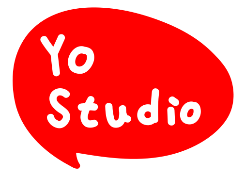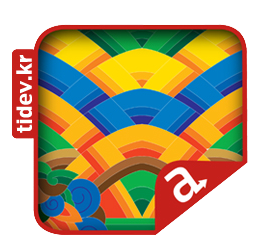
Web
Mobile
JavaScript
Open Source
Creative Commons
목차
- Atom Editor
- Titanium
- Atom Package for Titanium
Atom Editor
고백 #2
Atom으로 갈아탄 지
6개월
Why Atom?

Becuase it's
2015
for 21st centry
A Hackable Text Editor
for 21st Century
by
Hackable #1
100% Open Source
누구나 자유롭게 개선 할 수 있다.
MIT License
Hackable #2
JavaScript
당신도 읽고 쓸 수 있는 언어
Hackable #3
웹 기반 에디터
HTML, CSS, and JavaScript
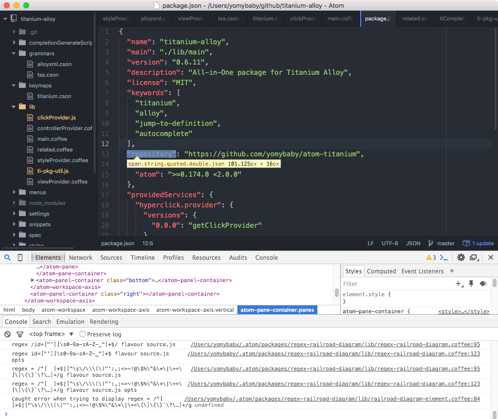Hackable #3-1
- Web Tech
- Open Source
- Cross Platform
Hackable #3-2
그럼 왜 Electron
네이티브는 나타나고 사라진다.
하지만 웹은 꾸준히 그 능력이 증가해왔다.
Q1. Atom은 Sublime보다 느리다?
😅 네! 하지만 달라요!
Sublime이 그리울 땐
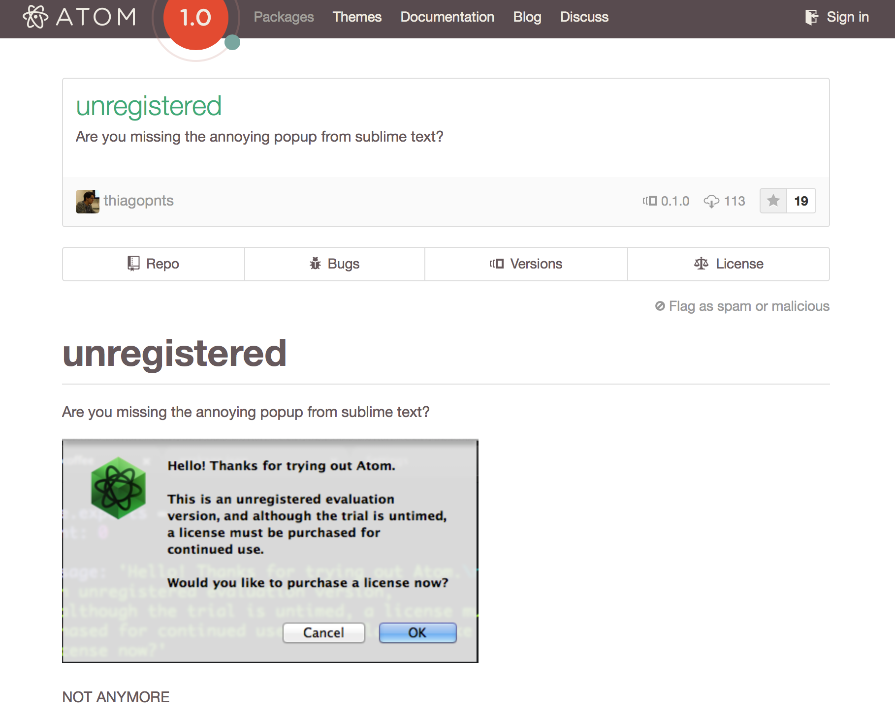Q2. Atom은 큰 프로젝트에는 부적합하다?
😙 아니요! Facebook : Xcode to Atom(Nuclide)
Building Stuff
for
Building Stuff
에디터를 만드는 에디터
철학
LIGHT core
MORE extensibility
About까지도 패키지
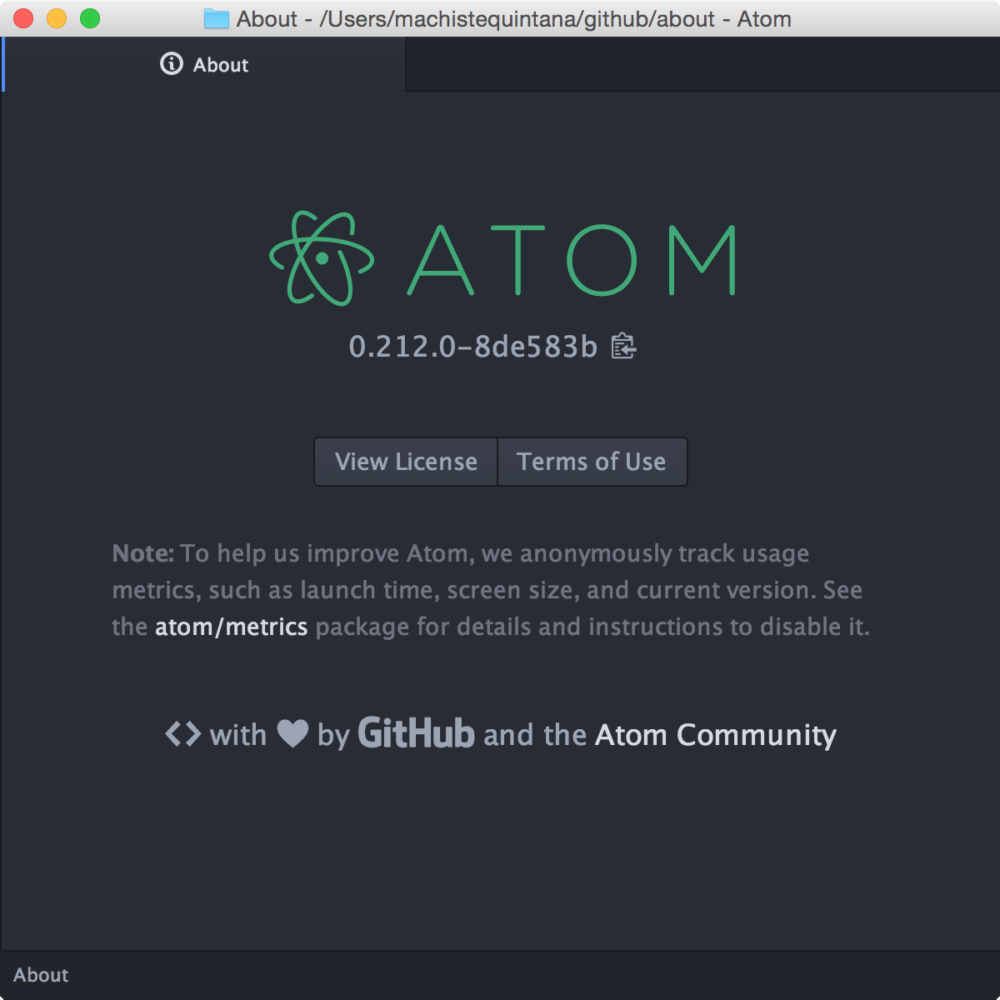Welcome to the PKG world
apm install <whatever-you-want>
유용한 패키지 1
Merge Conflicts
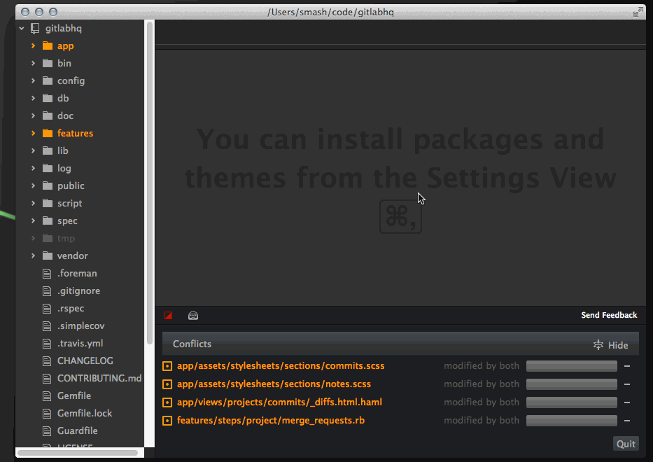유용한 패키지 2
Linter

유용한 패키지 3
Pigments

유용한 패키지 4
Beautify
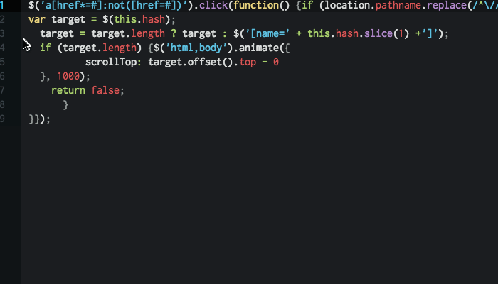유용한 패키지 5
expand-selection-to-quotes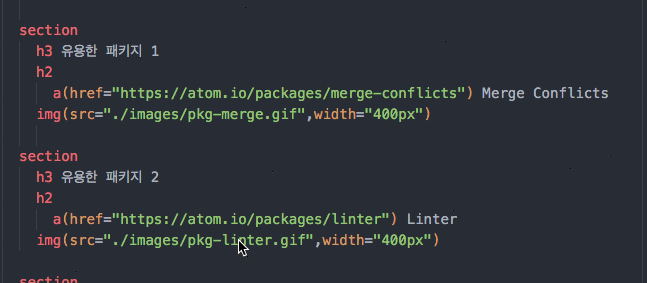유용한 패키지 6
regex-railroad-diagram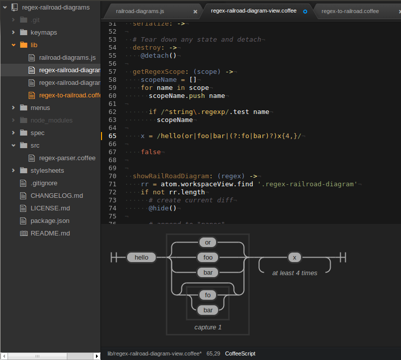유용한 패키지 7
imdone-atom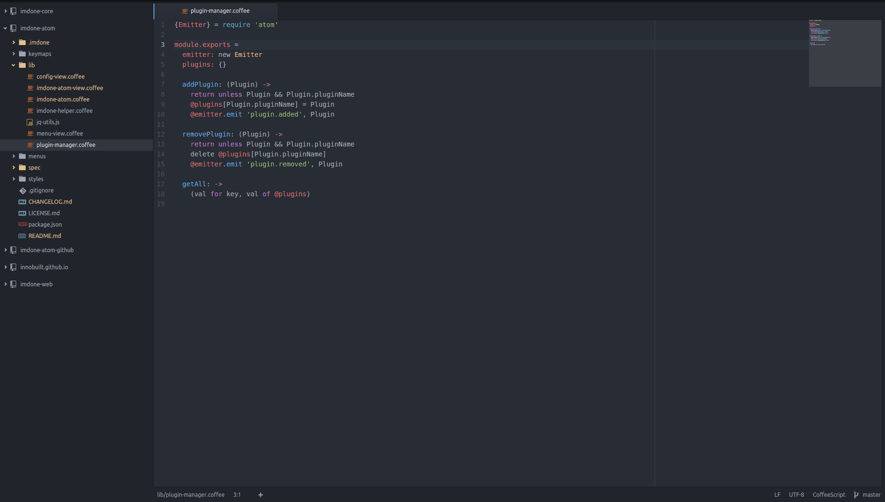모르고 지나갈 만한
기본 패키지들
- 3339 packages
- 968 themes
- 259 release
Titanium
JavaScript로
Native앱을 만드는
플랫폼
CROSS PLATFORM

Open Source
Apach License 2
JS to Native

Facbook - React Native
Q.
왜 Titanium을 택했나?
A. 생산성
- 수많은 API, 다양한 관련 오픈소스
- JavaScript
- 개인이나 소규모팀에서도 빠르게 서비스 개발!
Less Coding
More Thinking
개발보다는 제품자체에 집중
Titanium 둘러보기
Atom Package
for Titanium Alloy
결심
Studio에서 탈출하자!
Ti 개발에서 느끼는 어려움 #1
Studio가 무겁다
Eclipse 기반이기에
Ti 개발에서 느끼는 어려움 #2
반복적 타이핑
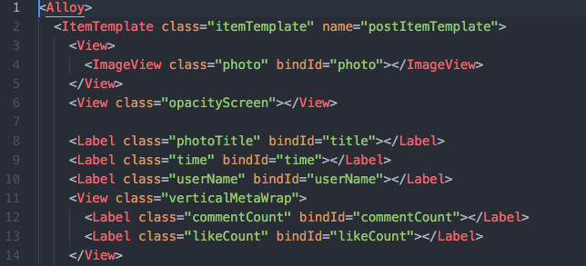Ti 개발에서 느끼는 어려움 #3
수많은 API
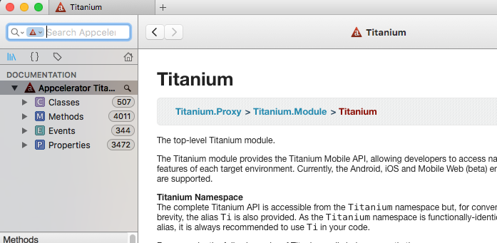
Ti 개발에서 느끼는 어려움 #4
오타는 쫌 치명적
Because JS.
😱Ti 개발에서 느끼는 어려움 #5
작은 파일 이동
View, Style, Controller..
패키지 개발 절차 #1
비슷한 놈을 찾아라
😗😙😚패키지 개발 절차 #2
비슷한 패키지를 Dev로 설치한다.
apm dev <package_name> [<directory>]
패키지 개발 절차 #3
분석하고 수정한다
Pull Request 혹은 새로운 패키지로
시연
반응
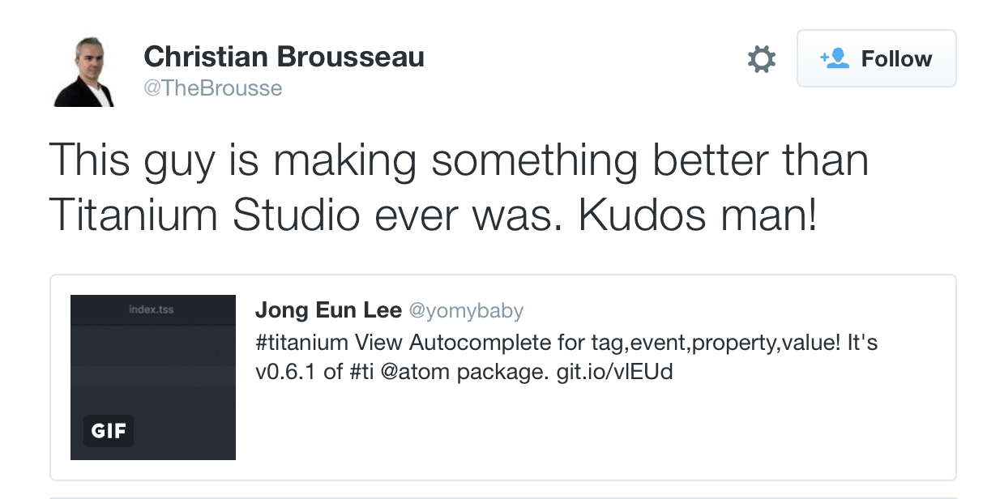1,144
7
4
처음 시작할 때
- Coffee script
- Babel
- RegExp
Tip 1
수정 후 Reload editor!
cmd + alt + ctrl + l개선 PR : reload package without reloading editor
Tip 2
커서위치의 scope 확인
cmd + alt + p
Tip 3
특정폴더에서 먹통일 때
rm ~/.atom/storage/*
Atom의 미래
From
초등학교에서 처음 코딩을 배우는 날 사용한 에디터
To
노련한 개발자가 되어도 계속 쓸 수 있는 에디터
기억할 3가지
- Open Source
- JavaScript
- Light core + Pakcakges